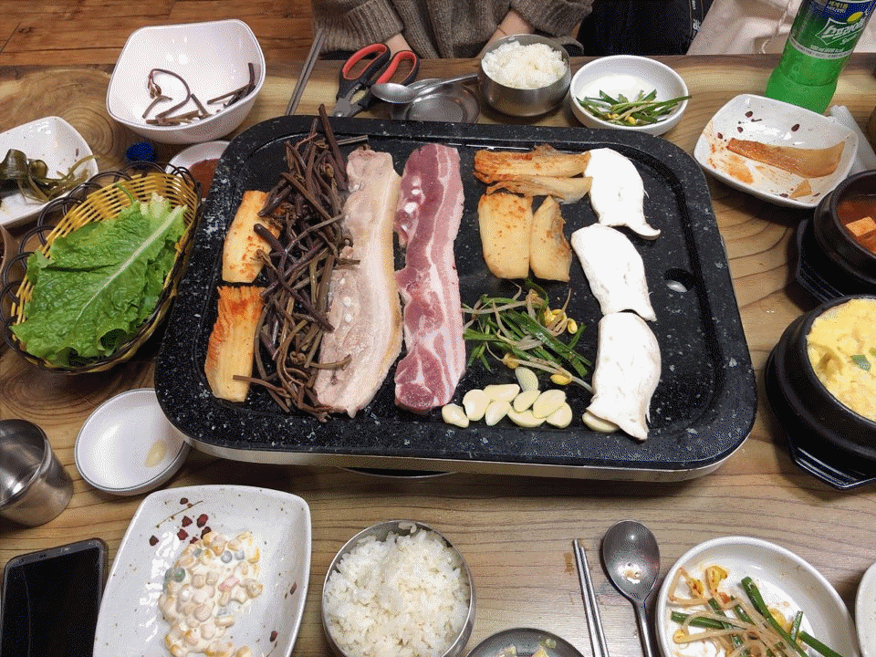

배고파서 신시가지를 헤매며 밥을 찾고 있었는데 눈앞에 새로 오픈한 고기집을 발견했다!! 새로 오픈한 가게라 그런지 시설도 깔끔하고 고기도 싱싱했어요ㅎㅎ 게다가 반찬으로 계란찜이 나와서 깜짝 놀랐어요 보통 계란찜은 반찬으로 안나오고 메뉴판에 적혀있는데ㅎㅎㅎ 계란찜이 짭짭해서 제 입맛에는 정막 딱 맞았어요 (사실 계란찜 엄청 좋아해요ㅎㅎ) 그리고 반찬으로 묵사발도 나왔는데 고기먹다 느끼할떄 딱 먹어면 정말 맛있어요ㅎㅎㅎ 그리고 오픈한지 얼마 안되서 그런지 고기도 짱짱 시선하고 고기를 씹으면 비계에서 육즙이 막 나와요 앞으로 여기 자주 가야겠어요ㅋㅋㅋ